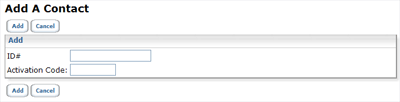
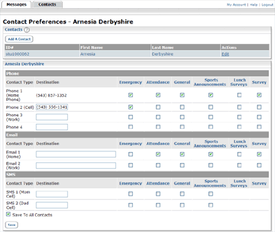

The Contact Manager will let you control what messages you receive and where you receive them. Additionally, any messages which have been sent to you in the last thirty days will be available for review in your Contact Manager account.
To begin, you will need to have your ID number and Activation code so that you can associate your contact information with your new Contact Manager account.
Activating Your Account:
When you log into your Contact Manager account for the first time, you will encounter a message with a link that goes to the Add a Contact page, shown below. Enter the ID number and Activation Code for your contact information in the appropriate fields and then click the Add button.
You will be taken to a confirmation screen confirming that you have added the contact successfully. If you need to add multiple contacts, click the Yes button and repeat step 1. If you are finished, click No and proceed to the next step.

Clicking No will bring you to the Contacts tab where you can edit your phone numbers, email addresses, and phones which can receive SMS (text) messages. Simply check the boxes next to each contact method corresponding to the types of messages you wish to receive there. You may also add additional contact information.
When you are done, click the Save button.
Checking Your Messages:
Any messages that have been sent to you in the last 30 days will appear in the Messages tab. Simply click on the Messages tab, and then click on the action you would like to perform.
Changing Your Login Email
1. Click on the My Account link at the top of the page. You will be taken to the Account Information page which shows your login information.
2. Click on the Change Email button.
3. Enter your new email address and old password and click Submit.
You will receive an activation email at your new address. Your current login information will be in effect until you activate the new address.
Changing Your Password
1. Click on the My Account link at the top of the page.
2. In the Account Information page, enter your old and new passwords in the appropriate fields.
3. Click the Submit button when you’re done.